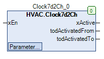
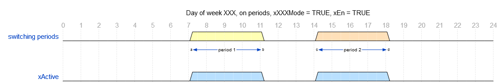
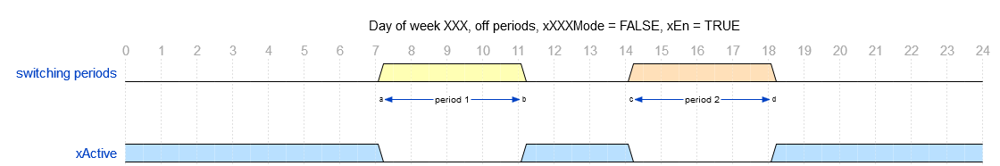

Clock7d2Ch (FB)¶
FUNCTION_BLOCK Clock7d2Ch
Kurzbeschreibung¶
Schaltuhr mit 7 Wochentagen, je zwei Ein-/Ausschaltzeitpunkte und binärem Gesamtausgang.Die Funktionsweise ( Einschaltperiode oder Ausschaltperiode ) ist pro Wochentag definierbar.Typische Anwendung: Festlegung des Nacht- / Tagbetriebs einer Zonentemperaturregelung
Darstellung¶

Schnittstellen¶
Eingänge¶
Name Datentyp Wertebereich Initialwert Funktion xEn BOOL Freigabeeingang
Ausgänge¶
Name Datentyp Wertebereich Initialwert Funktion xActive BOOL Anzeige aktiver Schaltperioden todActivatedFrom TOD Einschaltzeitpunkt 1 des aktuellen Wochentags todActivatedTo TOD Ausschaltzeitpunkt 2 des aktuellen Wochentags
Sollwerte / Parameter¶
Name Datentyp Wertebereich Initialwert Funktion todMonFrom1 TOD TOD#07:00 Einschaltzeitpunkt 1 - Montag todMonTo1 TOD TOD#12:00 Ausschaltzeitpunkt 1 - Montag todMonFrom2 TOD TOD#12:00 Einschaltzeitpunkt 2 - Montag todMonTo2 TOD TOD#18:00 Ausschaltzeitpunkt 2 - Montag xMonMode BOOL TRUE Modus - Schaltperioden - Montag todTueFrom1 TOD TOD#07:00 Einschaltzeitpunkt 1 - Dienstag todTueTo1 TOD TOD#12:00 Ausschaltzeitpunkt 1 - Dienstag todTueFrom2 TOD TOD#12:00 Einschaltzeitpunkt 2 - Dienstag todTueTo2 TOD TOD#18:00 Ausschaltzeitpunkt 2 - Dienstag xTueMode BOOL TRUE Modus - Schaltperioden - Dienstag todWedFrom1 TOD TOD#07:00 Einschaltzeitpunkt 1 - Mittwoch todWedTo1 TOD TOD#12:00 Ausschaltzeitpunkt 1 - Mittwoch todWedFrom2 TOD TOD#12:00 Einschaltzeitpunkt 2 - Mittwoch todWedTo2 TOD TOD#18:00 Ausschaltzeitpunkt 2 - Mittwoch xWedMode BOOL TRUE Modus - Schaltperioden - Mittwoch todThuFrom1 TOD TOD#07:00 Einschaltzeitpunkt 1 - Donnerstag todThuTo1 TOD TOD#12:00 Ausschaltzeitpunkt 1 - Donnerstag todThuFrom2 TOD TOD#12:00 Einschaltzeitpunkt 2 - Donnerstag todThuTo2 TOD TOD#18:00 Ausschaltzeitpunkt 2 - Donnerstag xThuMode BOOL TRUE Modus - Schaltperioden - Donnerstag todFriFrom1 TOD TOD#07:00 Einschaltzeitpunkt 1 - Freitag todFriTo1 TOD TOD#12:00 Ausschaltzeitpunkt 1 - Freitag todFriFrom2 TOD TOD#12:00 Einschaltzeitpunkt 2 - Freitag todFriTo2 TOD TOD#18:00 Ausschaltzeitpunkt 2 - Freitag xFriMode BOOL TRUE Modus - Schaltperioden - Freitag todSatFrom1 TOD TOD#07:00 Einschaltzeitpunkt 1 - Samstag todSatTo1 TOD TOD#12:00 Ausschaltzeitpunkt 1 - Samstag todSatFrom2 TOD TOD#12:00 Einschaltzeitpunkt 2 - Samstag todSatTo2 TOD TOD#18:00 Ausschaltzeitpunkt 2 - Samstag xSatMode BOOL TRUE Modus - Schaltperioden - Samstag todSunFrom1 TOD TOD#07:00 Einschaltzeitpunkt 1 - Sonntag todSunTo1 TOD TOD#12:00 Ausschaltzeitpunkt 1 - Sonntag todSunFrom2 TOD TOD#12:00 Einschaltzeitpunkt 2 - Sonntag todSunTo2 TOD TOD#18:00 Ausschaltzeitpunkt 2 - Sonntag xSunMode BOOL TRUE Modus - Schaltperioden - Sonntag sNotice STRING ‘Eigene Notiz - zum ändern klicken.’ Bezeichnung - Schaltuhr
Funktionsbeschreibung¶
Allgemeines¶
Wochentage 1 - 7 ( Montag ... Sonntag, XXX = Mon, Tue, Wed, Thu, Fri, Sat, Sun )¶
Jedem der sieben Wochentage sind zwei eigene Schaltperioden zugeordnet ( Schaltperiode 1, Schaltperiode 2 ).
Jede Schaltperiode 1 ist durch einstellbare Daten ( Einschaltzeitpunkt 1 todXXXTimeFrom1 und Ausschaltzeitpunkt 1 todXXXTimeTo1 ) definiert.
Jede Schaltperiode 2 ist durch einstellbare Daten ( Einschaltzeitpunkt 2 todXXXTimeFrom2 und Ausschaltzeitpunkt 2 todXXXTimeTo2 ) definiert.
Zusätzlich kann eine Betriebsart ( xXXXMode ) pro Wochentag festgelegt werden.
Liegt der Ausschaltzeitpunkt 1 vor dem Einschaltzeitpunkt 1, so wird für die Prüfung der Ausschaltzeitpunkt 1 auf den Wert des Einschaltzeitpunkts 1 gelegt.
Liegt der Einschaltzeitpunkt 2 vor dem Ausschaltzeitpunkt 1, so wird für die Prüfung der Einschaltzeitpunkt 2 auf den Wert des Ausschaltzeitpunkts 1 gelegt.
Liegt der Ausschaltzeitpunkt 2 vor dem Einschaltzeitpunkt 2, so wird für die Prüfung der Ausschaltzeitpunkt 2 auf den Wert des Einschaltzeitpunkts 2 gelegt.
Eine Schaltperiode ist aktiv, falls sich die aktuelle Uhrzeit am Wochentag XXX innerhalb der Schaltperioden des Wochentag XXX befindet ( xXXXMode = TRUE ).
Eine Schaltperiode ist aktiv, falls sich die aktuelle Uhrzeit am Wochentag XXX ausserhalb der Schaltperioden des Wochentag XXX befindet ( xXXXMode = FALSE ).
Sonderfall 1: Einschaltzeitpunkt 1 = Einschaltzeitpunkt 2 = Ausschaltzeitpunkt 1 = Ausschaltzeitpunkt 2 = TOD#00:00
Bei aktiver Einschaltperiode ( xXXXMode = TRUE ) ist die Schaltperiode ganztägig nicht aktiv.
Bei aktiver Ausschaltperiode ( xXXXMode = FALSE ) ist die Schaltperiode ganztägig aktiv.
Sonderfall 2: Einschaltzeitpunkt 1 = Einschaltzeitpunkt 2 = Ausschaltzeitpunkt 1 = Ausschaltzeitpunkt 2 = TOD#23:59
Bei aktiver Einschaltperiode ( xXXXMode = TRUE ) ist die Schaltperiode ganztägig aktiv.
Bei aktiver Ausschaltperiode ( xXXXMode = FALSE ) ist die Schaltperiode ganztägig nicht aktiv.
Einschaltperioden¶
Ausschaltperioden¶
Freigabeeingang xEn¶
xEn xActive todActivatedFrom todActivatedTo Hinweis FALSE FALSE unverändert unverändert FB deaktiviert TRUE Zustand abhängig vom Wochentag, der Uhrzeit und den Schaltperioden Einschaltzeitpunkt der Schaltperiode 1 des aktuellen Wochentags Ausschaltzeitpunkt der Schaltperiode 2 des aktuellen Wochentags FB aktiviert
Anzeigeausgang xActive¶
Der Anzeigeausgang xActive nimmt den Zustand TRUE an, falls bei aktivem Freigabeeingang ( xEn = TRUE ) die Uhrzeit am Wochentag XXX
innerhalb der Schaltperiode 1 oder der Schaltperiode 2 des Wochentags XXX liegt ( xXXXMode = TRUE, Einschaltperiode ).
Der Anzeigeausgang xActive nimmt den Zustand TRUE an, falls bei aktivem Freigabeeingang ( xEn = TRUE ) die Uhrzeit am Wochentag XXX
außerhalb der Schaltperiode 1 oder der Schaltperiode 2 des Wochentags XXX liegt ( xXXXMode = FALSE, Ausschaltperiode ).
In allen übrigen Fällen nimmt der Anzeigeausgang xActive den Zustand FALSE an.
xEn xActive Schaltperioden XXX xXXXMode - XXX Hinweis FALSE FALSE X X FB deaktiviert TRUE FALSE FALSE TRUE Einschaltperioden nicht aktiv TRUE TRUE TRUE TRUE Einschaltperioden aktiv TRUE TRUE FALSE FALSE Ausschaltperioden nicht aktiv TRUE FALSE TRUE FALSE Ausschaltperioden aktiv
Einschaltzeitpunkt der Schaltperioden des aktuellen Wochentags todActivatedFrom¶
Dieser Ausgang zeigt permanent den Einschaltzeitpunkt der Schaltperiode 1 des aktuellen Wochentags an, falls der Freigabeeingang ( xEn = TRUE ) aktiv ist.
In allen übrigen Situationen wird er nicht verändert. In den Sonderfällen 1 und 2 wird stets der Wert TOD#00:00 angezeigt.
Ausschaltzeitpunkt der Schaltperioden des aktuellen Wochentags todActivatedTo¶
Dieser Ausgang zeigt permanent den Ausschaltzeitpunkt der Schaltperiode 2 des aktuellen Wochentags an, falls der Freigabeeingang ( xEn = TRUE ) aktiv ist.
In allen übrigen Situationen wird er nicht verändert. Im Sonderfall 1 wird stets der Wert TOD#00:00, im Sonderfall 2 der Wert TOD#23:59 angezeigt.
Visualisierung¶
Information¶
Element Autoren Datum Version Anmerkungen Funktion Adam Bartod XX.xxxx 1.0 Ursprungsversion Programmierung Adam Bartod xx.xxxx 1.0 Ursprungsversion Test Jochen Reu 10.2017 1.0 Ursprungsversion Dokumentation Jochen Reu 10.2017 1.0 Ursprungsversion
Codesys¶
- InOut:
Scope Name Type Initial Comment Input xEn BOOL Freigabeeingang todMonFrom1 TOD TIME_OF_DAY#7:0 Einschaltzeitpunkt 1 - Montag todMonTo1 TOD TIME_OF_DAY#12:0 Ausschaltzeitpunkt 1 - Montag todMonFrom2 TOD TIME_OF_DAY#12:0 Einschaltzeitpunkt 2 - Montag todMonTo2 TOD TIME_OF_DAY#18:0 Ausschaltzeitpunkt 2 - Montag xMonMode BOOL TRUE Modus - Schaltperioden - Montag todTueFrom1 TOD TIME_OF_DAY#7:0 Einschaltzeitpunkt 1 - Dienstag todTueTo1 TOD TIME_OF_DAY#12:0 Ausschaltzeitpunkt 1 - Dienstag todTueFrom2 TOD TIME_OF_DAY#12:0 Einschaltzeitpunkt 2 - Dienstag todTueTo2 TOD TIME_OF_DAY#18:0 Ausschaltzeitpunkt 2 - Dienstag xTueMode BOOL TRUE Modus - Schaltperioden - Dienstag todWedFrom1 TOD TIME_OF_DAY#7:0 Einschaltzeitpunkt 1 - Mittwoch todWedTo1 TOD TIME_OF_DAY#12:0 Ausschaltzeitpunkt 1 - Mittwoch todWedFrom2 TOD TIME_OF_DAY#12:0 Einschaltzeitpunkt 2 - Mittwoch todWedTo2 TOD TIME_OF_DAY#18:0 Ausschaltzeitpunkt 2 - Mittwoch xWedMode BOOL TRUE Modus - Schaltperioden - Mittwoch todThuFrom1 TOD TIME_OF_DAY#7:0 Einschaltzeitpunkt 1 - Donnerstag todThuTo1 TOD TIME_OF_DAY#12:0 Ausschaltzeitpunkt 1 - Donnerstag todThuFrom2 TOD TIME_OF_DAY#12:0 Einschaltzeitpunkt 2 - Donnerstag todThuTo2 TOD TIME_OF_DAY#18:0 Ausschaltzeitpunkt 2 - Donnerstag xThuMode BOOL TRUE Modus - Schaltperioden - Donnerstag todFriFrom1 TOD TIME_OF_DAY#7:0 Einschaltzeitpunkt 1 - Freitag todFriTo1 TOD TIME_OF_DAY#12:0 Ausschaltzeitpunkt 1 - Freitag todFriFrom2 TOD TIME_OF_DAY#12:0 Einschaltzeitpunkt 2 - Freitag todFriTo2 TOD TIME_OF_DAY#18:0 Ausschaltzeitpunkt 2 - Freitag xFriMode BOOL TRUE Modus - Schaltperioden - Freitag todSatFrom1 TOD TIME_OF_DAY#7:0 Einschaltzeitpunkt 1 - Samstag todSatTo1 TOD TIME_OF_DAY#12:0 Ausschaltzeitpunkt 1 - Samstag todSatFrom2 TOD TIME_OF_DAY#12:0 Einschaltzeitpunkt 2 - Samstag todSatTo2 TOD TIME_OF_DAY#18:0 Ausschaltzeitpunkt 2 - Samstag xSatMode BOOL TRUE Modus - Schaltperioden - Samstag todSunFrom1 TOD TIME_OF_DAY#7:0 Einschaltzeitpunkt 1 - Sonntag todSunTo1 TOD TIME_OF_DAY#12:0 Ausschaltzeitpunkt 1 - Sonntag todSunFrom2 TOD TIME_OF_DAY#12:0 Einschaltzeitpunkt 2 - Sonntag todSunTo2 TOD TIME_OF_DAY#18:0 Ausschaltzeitpunkt 2 - Sonntag xSunMode BOOL TRUE Modus - Schaltperioden - Samstag sNotice STRING ‘Eigene Notiz - zum ändern klicken.’ Bezeichnung - Schaltuhr Output xActive BOOL Anzeige aktiver Schaltperioden todActivatedFrom TOD Einschaltzeitpunkt 1 des aktuellen Wochentags todActivatedTo TOD Ausschaltzeitpunkt 2 des aktuellen Wochentags